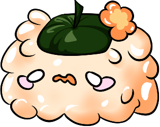

Edo Edo Teishoku!
Collect and fight with recipes and 3 unique chefs. Only one chef can fight thier way to freedom from the island, is that going to be you?

Role:Game Designer
Role:UI/UX Designer
Game Type: Capstone Game
With Wall-B done, and Isekai Truck done, I joined the studio sol game development studio at my school and we began making Edo Edo Teishoku (A rouge-like, jpg, cooking, timer-based game) I made everything from recipe concepts to boss kits. Currently, we have 62 recipes, 5 bosses, 10 garnishes (that are done, we have about 40 that aren’t implemented yet), 3 skill trees, and about 20 different events for the player to experience.
The team I’ve worked with is remarkable at what they do, from audio to programming to the artists.
Everyone is insanely talented and I am glad to have found them when I did.
Here's the Link If you'd like to play the game for yourself
https://funbam.itch.io/edo-edo-teishoku